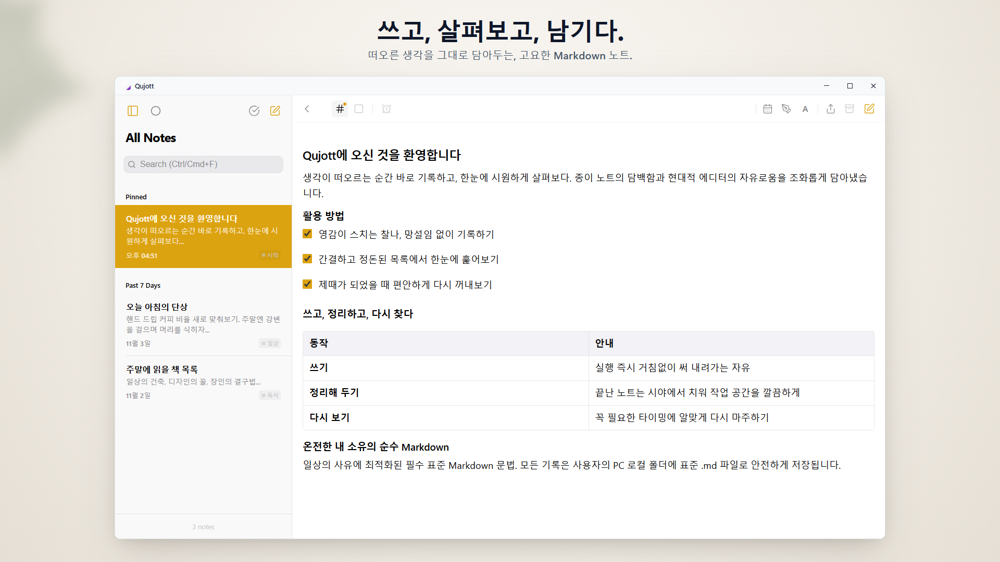
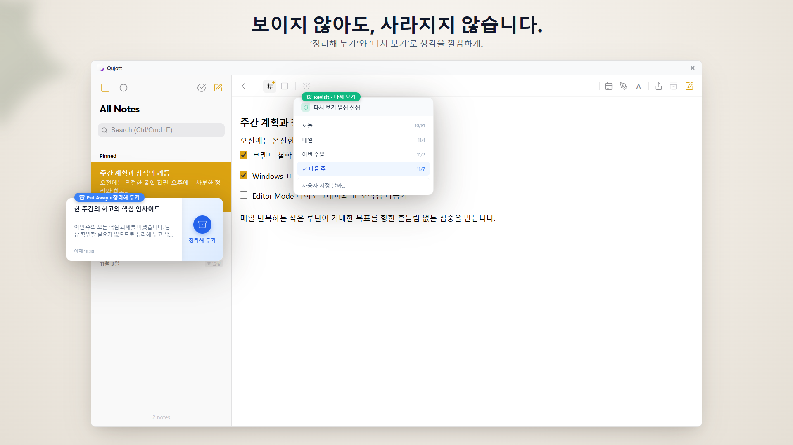
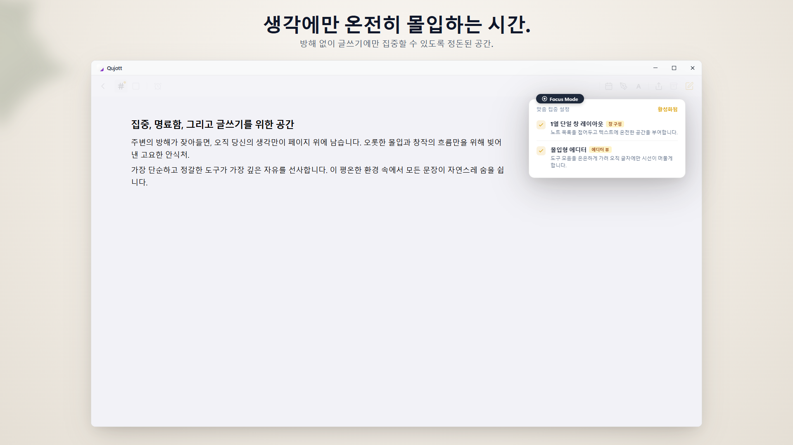
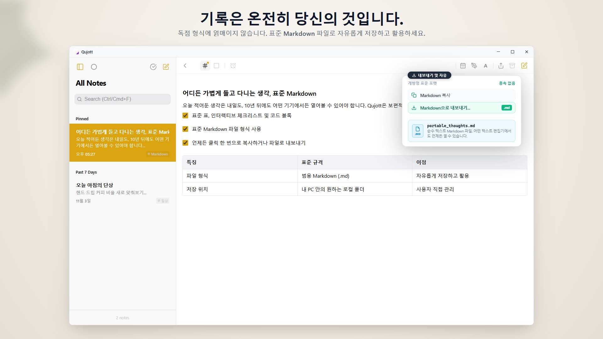
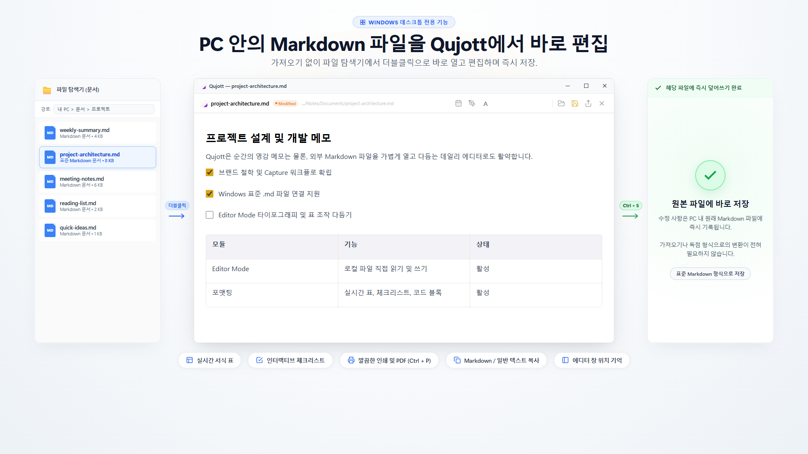
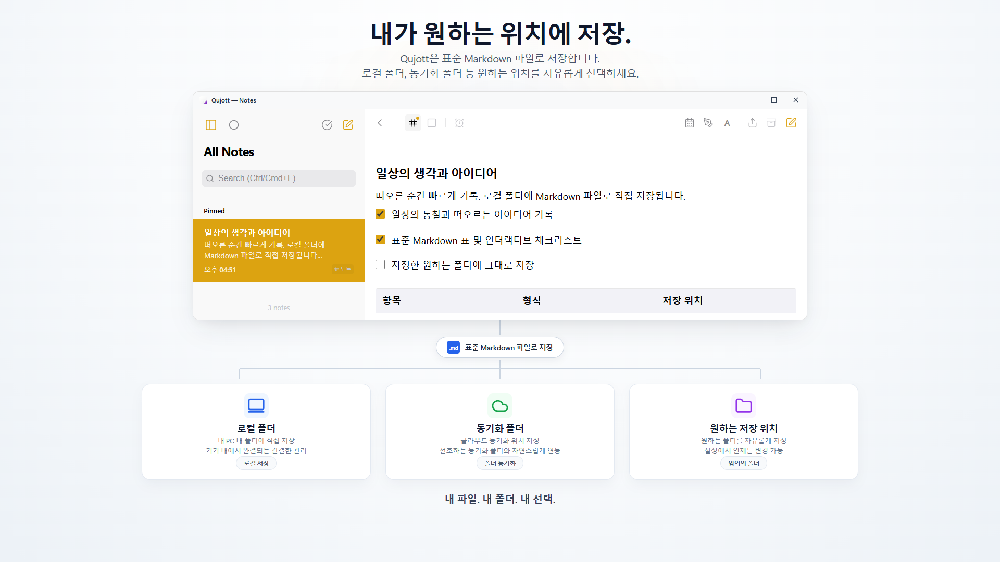
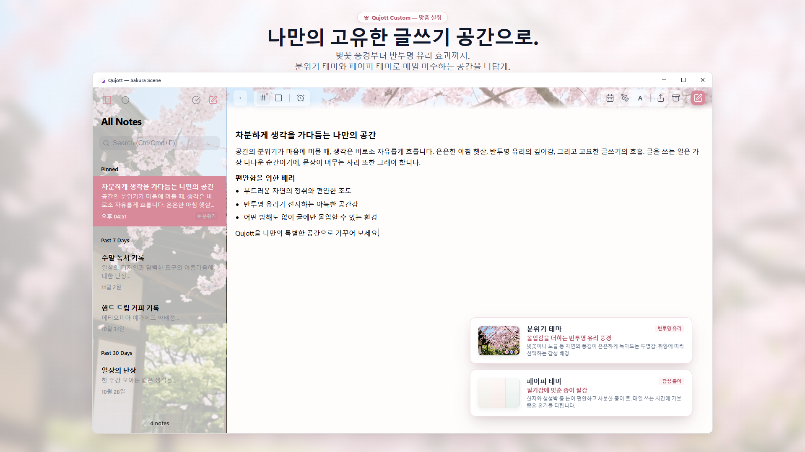
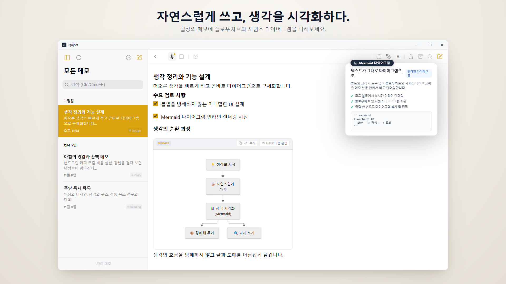
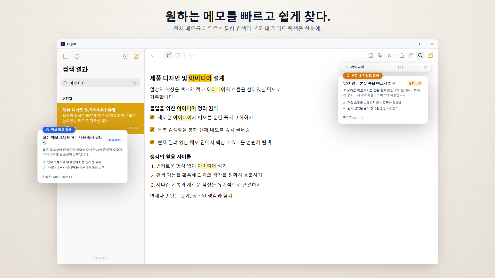

Qujott
생각이 떠오른 순간, 부담 없이 적고
언제든 다시 꺼내보세요.
Qujott(쿠조트)는 메모장의 가벼움과 텍스트 에디터의 범용성을 겸비한 디지털 잡기장입니다.
정리는 나중에. 일단 떠오른 생각을 바로 곁에 두세요.
표준 Markdown 형식 지원. 원하는 곳 어디든 순수 텍스트 파일로 자유롭게 저장하고 편집할 수 있습니다.

생각과 메모 목록이 자연스럽게 어우러지는 단정하고 고요한 2패널 공간
키보드 옆 종이 메모장처럼, 망설임 없이 바로 쓰다.
Qujott는 거대한 지식 베이스나 복잡한 작업 관리 시스템을 만들기 위한 도구가 아닙니다.
책상 옆에 놓인 종이 메모장처럼, 생각이 떠오른 찰나에 망설임 없이 적기 시작하는 경험에만 집중했습니다.
사전에 폴더를 고민하거나 태그를 억지로 지정할 필요가 없습니다.
머릿속에 떠오른 문장을 그대로 적어두고 곁에 두세요. 정리는 나중에 둘러보면서 천천히 하면 됩니다.
메모를 살며시 치워두고, 알맞은 때에 다시 만나다.
작성을 마친 메모는 지우지 않고 시야에서 살짝 치워두는「치워두기(Put Away)」로 시야를 깨끗하게 유지할 수 있습니다.
「다시보기(Revisit)」를 설정해두면 오늘, 내일, 다음 주 등 원하는 시점에 목록 상단으로 조용히 돌아옵니다. 시끄러운 알림 없이 자연스러운 리듬으로 생각과 재회하세요.

시야를 깔끔하게 유지하는 치워두기와, 적절한 시점에 다시 만나는 다시보기
오직 글쓰기에만 고요히 몰입하다.
사이드바를 접고 1패널로 전환하는「Focus Mode」를 제공합니다.
불필요한 인터페이스 요소를 걷어내고, 오직 생각을 문장으로 엮어내는 데에만 집중할 수 있는 차분한 집필 공간을 만들어 줍니다.

시각적 방해 요소를 배제하고 글쓰기 자체에만 몰입하는 Focus 모드
당신이 쓴 글은 온전히 당신의 것입니다.
Qujott에 적은 모든 메모는 표준 Markdown(.md) 파일로 저장됩니다.
독자적인 데이터베이스에 종속(락인)되지 않습니다. 다른 에디터나 도구에서도 언제든 열람·편집할 수 있으며, 자유롭게 내보내고 백업할 수 있습니다.

모든 메모는 표준 Markdown(.md) 파일로 저장되어 언제든 자유롭게 열람과 이동이 가능
PC의 Markdown 파일을 바로 열고 편집하다.
PC에 있는 기존 Markdown 파일을 Qujott로 직접 열고, 편집한 뒤 원본 파일에 바로 덮어쓰기 저장할 수 있습니다.
파일 가져오기나 형식 변환이 전혀 필요 없습니다. 가벼운 일상용 단일 Markdown 에디터로도 편리하게 활용하세요.

기존 Markdown 파일을 직접 열고 그 자리에서 수정·저장하는 Editor Mode
저장 위치는 당신이 자유롭게 결정합니다.
메모가 저장될 디렉터리는 PC의 로컬 폴더, 클라우드 동기화 폴더, 외장 드라이브 등 원하는 곳을 자유롭게 지정할 수 있습니다.
클라우드 계정 가입 없이도, 선택한 폴더에 메모를 직접 저장하며 바로 사용할 수 있습니다.

PC 로컬 폴더, 동기화 폴더, 외장 드라이브 등 원하는 저장 위치를 자유롭게 선택
글을 쓰는 공간을 나만의 아늑한 결로 채우다.
반투명 유리 효과가 어우러지는 배경 테마「Atmosphere Scenes(Sakura 등)」와 종이 질감 테마로 매일 글을 쓰는 공간을 아늑하게 꾸밀 수 있습니다(Qujott Pro 유료 구매).
또한 UI 표시 배율(80%~160%) 조절 기능을 통해 어떤 모니터 환경에서도 가장 편안한 크기로 맞춰 사용할 수 있습니다.

은은한 Atmosphere Scenes(Sakura) 풍경과 화면에 맞춘 UI 배율 조절
자연스럽게 쓰고, 생각을 시각화하다.
Markdown으로 생각을 적어 내려가는 흐름 그대로 같은 메모 안에서 플로우차트, 시퀀스 다이어그램 등 Mermaid 다이어그램을 바로 표시할 수 있습니다.
서식 메뉴에서 템플릿을 간편하게 삽입할 수 있어 별도의 다이어그램 앱을 열 필요가 없습니다.

일상의 Markdown 메모 안에 플로우차트와 시퀀스 다이어그램을 자연스럽게 표시
적어둔 생각으로, 빠르게 다시 닿다.
메모 목록 전체에서 제목과 본문을 아우르는 통합 검색(Ctrl+Shift+F)과 현재 편집 중인 메모 내부에서 바로 이동하는 메모 내 검색(Ctrl+F)을 모두 지원합니다.
기록해 둔 생각을 언제든 망설임 없이 다시 꺼내 볼 수 있습니다.

전체 메모 통합 검색(Ctrl+Shift+F) 및 현재 메모 내 키워드 검색(Ctrl+F) 지원